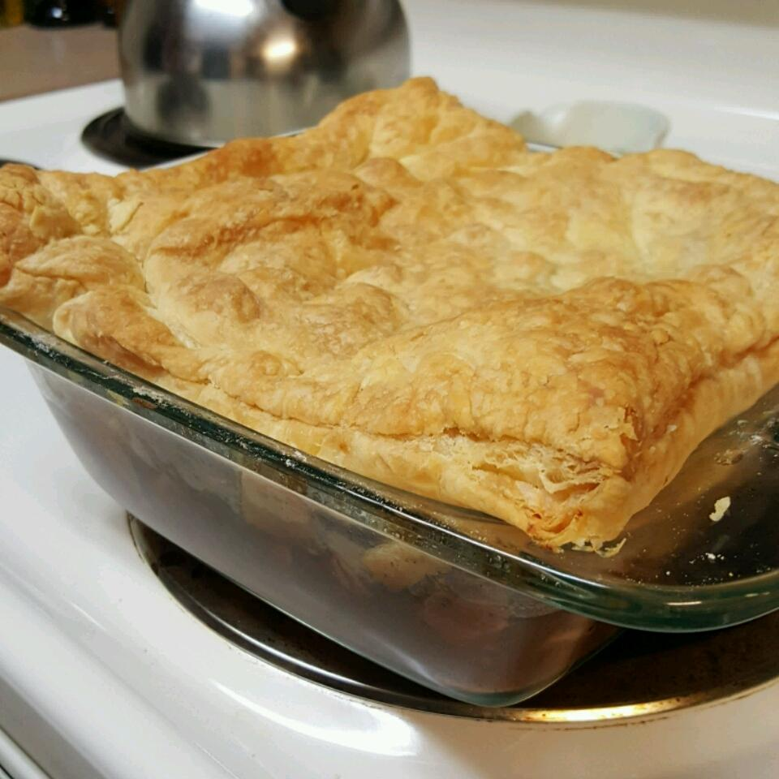

Guinness® Steak Pie

Sourced from Allrecipes
Description
Quick comfort food, especially good on a chilly evening.
Ingredients
- 1 tablespoon butter
- ½ pound beef shoulder steak, cubed
- 1 small sweet potato, diced
- 2 carrots, sliced
- 2 red potatoes, diced
- ½ yellow onion, diced
- ½ teaspoon garlic powder
- ground black pepper to taste
- 1 cup Irish stout beer (such as Guinness®)
- 1 (.75 ounce) packet dry brown gravy mix
- ½ teaspoon garlic powder
- ¼ teaspoon dried thyme
- ½ (17.5 ounce) package frozen puff pastry, thawed
Steps
- Preheat oven to 375 degrees F (190 degrees C).
-
Heat a large skillet over high heat; add butter, beef cubes, sweet potato,
carrots, red potatoes, and yellow onion to the hot skillet. Sprinkle meat
and vegetables with 1/2 teaspoon garlic powder and black pepper. Cook and
stir until meat is browned on all sides, about 10 minutes. Transfer meat and
vegetables to a 1-quart baking dish.
-
Whisk beer, brown gravy mix, 1/2 teaspoon garlic powder, thyme, and black
pepper together in a saucepan over medium heat. Bring to a simmer, reduce
heat to low, and cook, whisking constantly, until sauce has thickened, about
5 minutes. Pour sauce over meat and vegetables.
-
Trim puff pastry to fit top of baking dish and cover dish with pastry.
-
Bake in the preheated oven until puff pastry is deep golden brown and
filling is bubbly, 45 to 50 minutes.